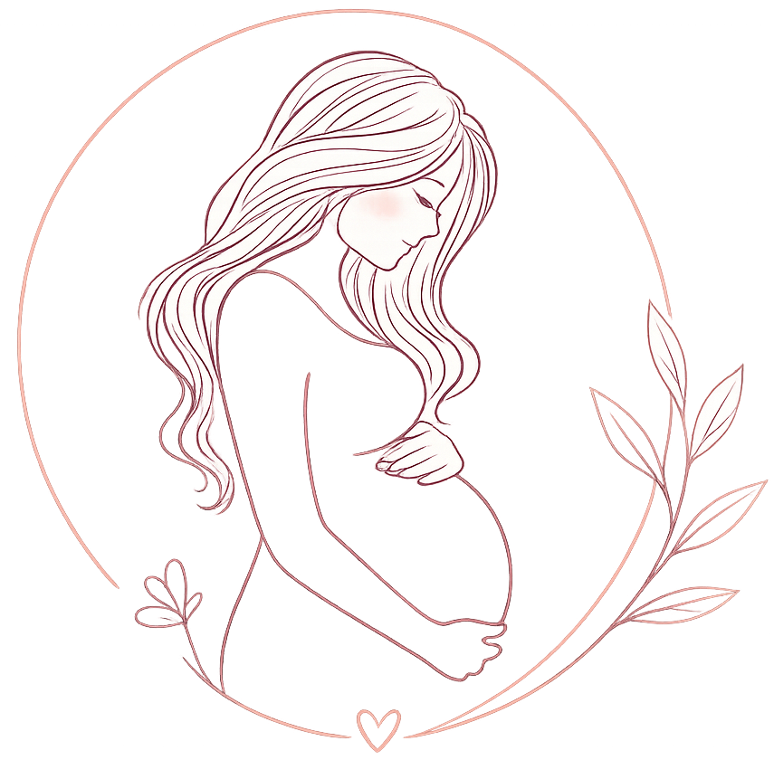

--
Has completado el 0% de tu viaje materno
Módulos completados: 0 de 4
Explora los módulos según tu etapa
Conoce los síntomas que requieren atención inmediata
Sangrado vaginal
Disminución de movimientos fetales
Contracciones intensas
Fiebre mayor a 38°C
Las personas que te acompañan en este viaje
Aún no tienes acompañantes agregados.
Resolvemos algunas dudas comunes durante el embarazo
Debes acudir a urgencias si presentas sangrado, pérdida de líquido, fiebre mayor a 38°C, dolor intenso o disminución de movimientos fetales.
El número de controles dependerá de cada embarazo, pero generalmente se realizan controles periódicos durante toda la gestación, en Chile se recomienda hacer cada 4 semanas hasta la semana 28, luego cada 2 semanas hasta la semana 36 y después semanalmente hasta el parto.
Puedes preparar ropa cómoda, documentos, artículos de higiene personal y ropa para tu bebé.